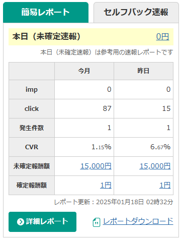

ホーム
副業を始めてみたいけれど、何から手を付けて良いのか分からない…そんなあなたにおすすめなのが「A8.net」です！
A8.netは初心者にも優しいアフィリエイトサービスで、自分の好きなジャンルや商品を選んで、サイトやSNSを通じて収益を得ることができます。
A8.netとは？
A8.netは、日本最大級のアフィリエイトサービスで、広告主とアフィリエイターをつなぐプラットフォームです。
広告主は商品やサービスの販売促進を目的に広告を掲載し、アフィリエイターはその広告を利用して収益を得る仕組みになっています。
以下の特徴があります：
- 日本国内で最大規模の登録数を誇る信頼性の高いサービス
- 金融、ファッション、美容、旅行など幅広いジャンルの広告を選べる
- 初心者向けのサポートやノウハウが充実
- 広告ごとに異なる報酬体系が用意され、クリック型報酬や成果型報酬など選択可能
さらに、A8.netはパートナー向けに「セルフバック」という機能を提供しています。この機能を使えば、自分で広告を利用することでキャッシュバックを受け取ることも可能です。
どうやって稼ぐの？
以下の3つのステップで、誰でも簡単に収益を得ることができます：
- A8.netに登録
- 広告を選んで自分のサイトやSNSに貼る
- リンクをクリックしてもらうだけで報酬発生！
登録方法
今すぐ始めてみたい方はこちらから登録できます：
A8.netに無料登録する具体例：こんな感じで稼げます！
たとえば、1日に5人があなたのリンクをクリックして、そのうち1人が商品を購入した場合...
- 商品価格：5,000円
- 成果報酬：10% → 500円
- 1ヶ月で：500円 × 30日 = 15,000円！
経験談
「実際に副業としてA8.netを使ってみました。最初は難しそうだと思いましたが、登録から収益化までスムーズに進めることができました！」
このように１件の成果でも高単価のものであればすぐにお小遣いを稼ぐことができました！！
なぜA8.netがおすすめ？
- 登録は完全無料！
- 初心者でも分かりやすいサポート体制
- 幅広いジャンルの広告が選べる